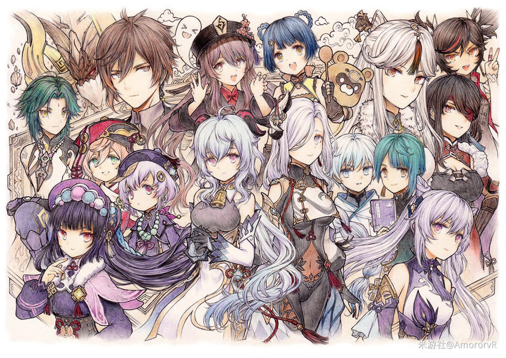

版本更新 3.7版本「决斗！召唤之巅！」更新公告：全新角色「琉形蜃境」登场 本次版本将上线全新五星角色「琉形蜃境」、七圣召唤新规则、多项活动玩法与系统优化，带来前所未有的游戏体验。 作者：原神项目组 2025-05-08 💬 1286
 同人创作 「璃月风华」同人画作大赛获奖作品展：水墨风格角色设计惊艳全场 本次大赛收到全球玩家投稿3200余件，金奖作品《岩王闲游[](@replace=10001)》将璃月建筑与传统水墨技法完美结合... 展开全文 ▶ 作者：艺术共创组 2025-05-07 💬 2345
官方公告 《[原神]》3.8版本预下载功能上线公告及存储空间优化说明 移动端新增资源预下载功能，PC端安装包体积减少15%，详细说明设备存储空间管理方案... 展开全文 ▶ 作者：技术运维组 2025-05-06 💬 1890
角色评测 「夜兰」深渊实战手册：双水共鸣配队与绝缘四件套实战数据分析 详细解析夜兰的E技能充能循环机制，若水/终末弓的伤害对比测试，双水共鸣队输出提升率测算... 展开全文 ▶ 作者：攻略研究院 2025-05-05 💬 3021